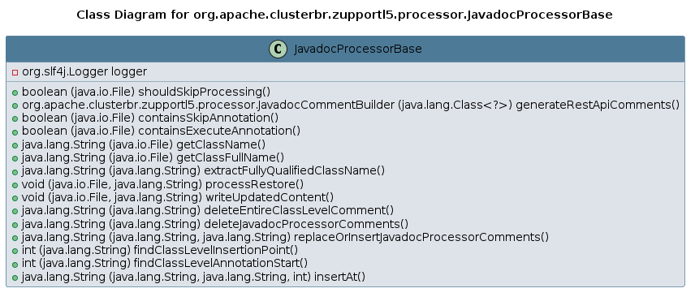

Class JavadocProcessorBase
java.lang.Object
org.apache.clusterbr.zupportl5.processor.JavadocProcessorBase
- Direct Known Subclasses:
JavadocProcessor
UML Diagrams:

- Since:
- 2024-1108
- Author:
- arcbrth@gmail.com
-
Field Summary
Fields -
Constructor Summary
Constructors -
Method Summary
Modifier and TypeMethodDescriptionprotected booleanprotected booleancontainsSkipAnnotation(File file) protected StringdeleteEntireClassLevelComment(String content) Deletes the entire class-level Javadoc comment, ensuring it is removed only if it precedes a class, interface, enum, or record declaration, regardless of its access modifier.protected StringdeleteJavadocProcessorComments(String content) Delete all content between and (inclusive) The regex matches everything between and including the start and end markers.protected StringextractFullyQualifiedClassName(String content) protected JavadocCommentBuildergenerateRestApiComments(Class<?> controllerClass) protected StringgetClassFullName(File file) protected StringgetClassName(File file) protected voidprocessRestore(File file, String content) protected StringreplaceOrInsertJavadocProcessorComments(String fileSourceCode, String newComments) Replaces or inserts comment processor tags and content into the source code.protected booleanshouldSkipProcessing(File file) protected voidwriteUpdatedContent(File file, String content)
-
Field Details
-
logger
protected static final org.slf4j.Logger logger
-
-
Constructor Details
-
JavadocProcessorBase
public JavadocProcessorBase()
-
-
Method Details
-
shouldSkipProcessing
-
generateRestApiComments
-
containsSkipAnnotation
-
containsExecuteAnnotation
-
getClassName
-
getClassFullName
-
extractFullyQualifiedClassName
-
processRestore
- Throws:
IOException
-
writeUpdatedContent
- Throws:
IOException
-
deleteEntireClassLevelComment
Deletes the entire class-level Javadoc comment, ensuring it is removed only if it precedes a class, interface, enum, or record declaration, regardless of its access modifier.- Parameters:
content- the source code content- Returns:
- the modified source code with the class-level Javadoc removed
-
deleteJavadocProcessorComments
Delete all content between and (inclusive) The regex matches everything between and including the start and end markers. The (?s) flag allows . to match newline characters.- Parameters:
content-- Returns:
- String
-
replaceOrInsertJavadocProcessorComments
Replaces or inserts comment processor tags and content into the source code. Handles three cases: - No comments at all at class level: Inserts the new comment block before the class. - Tags do not exist but class-level comments exist: Adds the new comments just before the ending of the existing class-level comments. - Tags exist and class-level comments exist: Replaces content between the tags with new comments.- Parameters:
fileSourceCode- the full source code of the filenewComments- the new comments to be added- Returns:
- the modified source code
-